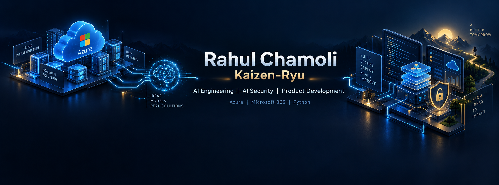

AI applications
Assistants, retrieval and tool integrations that help people do real work.
AI ENGINEER & CLOUD CONSULTANT
I'm Rahul Chamoli. I build practical AI assistants, cloud automation and thoughtfully engineered products.
AI applications · Cloud consulting · Security-minded delivery

ONE BUILDER. CONTINUOUS IMPROVEMENT.
01 / EXPERTISE
I connect business requirements with architecture, implementation and maintainable delivery.
Assistants, retrieval and tool integrations that help people do real work.
Azure and Microsoft 365 workflows, built for repeatability and clear operations.
Structured APIs and backend systems, with readable code and useful documentation.
Data protection, deliberate tool access and clear review boundaries. A growing focus in my work.
02 / THE BUILD IN PROGRESS
A workspace for building with AI, and understanding what gets built.


I'm exploring a local AI workspace that brings project knowledge, coding agents and meeting assistance together. The goal is simple: understand the plan, see the work and verify the result.
Public demos and measured case studies will be shared as they are ready.
Inside the project03 / PROJECT NOTEBOOK
A project notebook drawn from my actual AI, cloud and security work. Related engagements are grouped, and company details are kept private.
A local AI workspace for understanding projects, collaborating with agents and keeping evidence connected to the work.
AI-assisted development can grow faster than a builder's understanding of the code. Plans, knowledge and results need one visible home.
Continue validating useful end-to-end workflows, local model quality and response speed. A public demo and measured case study are still to come.
Manage application identities through a structured request, approval and audit workflow.
Identity administration needs clear ownership, consistent policy and traceable actions.
Company engineering work. This is an anonymized capability summary; source code, customer information and internal evidence are private.
Explore protection for sensitive information when people use public AI tools.
AI adoption creates new places where sensitive information can leave an organization.
Company product development. This is an anonymized capability summary; source code, customer information and internal evidence are private.
Turn application installers into a structured packaging, validation and release workflow.
Packaging applications repeatedly requires both automation and reliable installation evidence.
Company product development. This is an anonymized capability summary; source code, customer information and internal evidence are private.
Bring virtual desktop capacity, host pools and operational views into one workspace.
Teams need a clear view of desktop capacity and the signals behind user experience.
Company engineering work. This is an anonymized capability summary; source code, customer information and internal evidence are private.
Organize subscription spend and recommendations into repeatable reporting workflows.
A monthly cloud report needs consistent data, useful explanations and readable exports.
Company engineering work. This is an anonymized capability summary; source code, customer information and internal evidence are private.
Connect service desk information with a customer-focused reporting experience.
Service reporting must be useful to each customer while keeping information separated.
Company engineering work. This is an anonymized capability summary; source code, customer information and internal evidence are private.
Make application identities, groups and cloud accounts easier to discover by object or owner.
Identity information is spread across directories and operational registries.
Customer engineering work. This is an anonymized capability summary; source code, customer information and internal evidence are private.
An AI assistant for identity and access questions, connected to enterprise context.
People need understandable answers to identity questions without navigating every system themselves.
Customer engineering work. This is an anonymized capability summary; source code, customer information and internal evidence are private.
A service interface that lets an enterprise application work with an AI assistant.
An assistant needs a clear integration contract when other products call it.
Customer engineering work. This is an anonymized capability summary; source code, customer information and internal evidence are private.
Design a repeatable way to investigate failed application identity authentications.
An error code alone does not explain the root cause or the action an owner should take.
Research and solution design. This is an anonymized capability summary; source code, customer information and internal evidence are private.
Assessment and roadmap work for data protection and safer adoption of enterprise AI.
AI readiness depends on both information classification and appropriate access.
Professional engagements. This is an anonymized capability summary; source code, customer information and internal evidence are private.
Professional work is presented through anonymized capability summaries. Customer names, internal URLs, source code and sensitive evidence are not published. Similar project copies are grouped; sandbox and retired prototypes are excluded. These descriptions do not claim measured client outcomes or independently verified production readiness.
A small, dependency-free site. Local assets, accessible navigation and a clear home for my work.
04 / HOW I BUILD
Define the problem, users and acceptance criteria.
Research the options and make the architecture clear.
Implement in focused, reviewable pieces.
Test, document and learn from the result.
05 / THE BUILDER
I'm an AI Engineer and Cloud Consultant with a background in Azure, Microsoft 365 and information protection.
My current focus is practical AI development and deeper expertise in AI application security. Kaizen-Ryu is both my developer identity and the name behind my ongoing work in local AI systems.
My principle: continuous improvement, one useful change at a time.
MICROSOFT CERTIFICATION BACKGROUND
My foundation spans cloud, desktop environments, business platforms and information protection.
06 / LET'S MAKE IT USEFUL
An AI assistant, a cloud workflow or a product to build? Tell me what needs to change.
Prefer LinkedIn? Connect with Rahul ↗
Direct email: rahulchamoli.in@gmail.com
What you want to build
Your current setup
The result you need
Your timeline